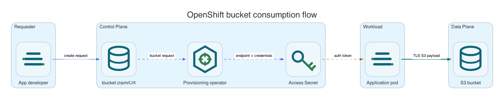

Reference / Platform / OpenShift
OpenShift bucket consumption APIs.
OpenShift users can consume Li9 S3 through native Li9 CRDs, OBC-style workflows, or COSI-style workflows. Li9 CRDs expose the full product feature set; OBC/COSI exist for compatibility with Kubernetes object-storage consumers.
Which API To Use

| API | Use When | Tradeoff |
|---|---|---|
S3Bucket and S3BucketAccess | You want Li9-specific features, advanced policies, lifecycle, archive, replication, status, and generated Secrets. | Li9-specific CRDs. |
| ObjectBucketClaim | An application already expects ODF/lib-bucket-provisioner style object bucket claims. | Compatibility surface is narrower than Li9 CRDs. |
| COSI BucketClaim/BucketAccess | You want Kubernetes object-storage API alignment. | Feature set depends on COSI support level. |
| OpenShift RBAC bucket browser | A human user needs to inspect, download, upload, or delete bucket objects through a web UI using OpenShift identity. | Interactive web access only; applications should still use generated S3 credentials. |
Li9 CR Example
cat <<EOF | oc -n li9-s3-runtime apply -f -
apiVersion: storage.li9.com/v1alpha1
kind: S3Bucket
metadata:
name: app-data
spec:
storageRef:
name: li9-s3
bucketName: app-data
region: us-east-1
secretName: app-data-s3
---
apiVersion: storage.li9.com/v1alpha1
kind: S3BucketAccess
metadata:
name: app-data-reader
spec:
s3BucketRef: app-data
secretName: app-data-reader-s3
access:
effect: Allow
actions:
- s3:GetObject
- s3:ListBucket
prefixes:
- reports/
EOF
oc -n li9-s3-runtime wait --for=condition=Ready s3bucket/app-data --timeout=10m
oc -n li9-s3-runtime wait --for=condition=Ready s3bucketaccess/app-data-reader --timeout=10m
oc -n li9-s3-runtime get secret app-data-reader-s3 -o jsonpath='{.data.AWS_ENDPOINT_URL}' | base64 -dGenerated Secret Contract
| Key | Meaning |
|---|---|
AWS_ENDPOINT_URL | Internal Service endpoint unless the storage instance exposes an external Route. |
AWS_ACCESS_KEY_ID | Scoped access key. |
AWS_SECRET_ACCESS_KEY | Scoped secret key. |
AWS_REGION | Bucket region, defaulting to the storage default when omitted. |
BUCKET_NAME | Effective S3 bucket name. |
Workload Check
oc -n app-ns run aws-cli --rm -i --restart=Never --image=amazon/aws-cli:2 --env-from=secretRef/name=app-data-reader-s3 -- s3api --endpoint-url "$AWS_ENDPOINT_URL" --region "$AWS_REGION" list-objects-v2 --bucket "$BUCKET_NAME"